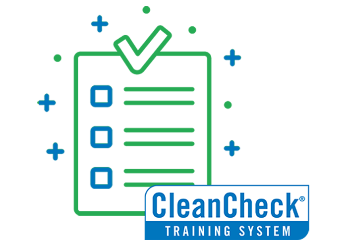

🧹
Cleaning Fundamentals
Core cleaning techniques, proper chemical handling, equipment operation, and safe working practices that form the foundation of professional cleaning.
Our proprietary workforce training platform — building the knowledge, skills, and confidence that set IServe apart from every other cleaning company.

CleanCheck is more than an onboarding checklist. It's a comprehensive, structured training system that covers every aspect of professional cleaning — from basic technique to advanced infection control — and ties directly to our quality audit outcomes.
A rigorous, multi-module curriculum designed by industry experts to build competent, confident cleaning professionals.
Core cleaning techniques, proper chemical handling, equipment operation, and safe working practices that form the foundation of professional cleaning.
Understanding pathogens, cross-contamination prevention, correct disinfection protocols, and PPE usage for high-risk environments including healthcare.
Safe storage, handling, dilution, and disposal of cleaning chemicals, including thorough understanding of Safety Data Sheets and hazard communication.
Specialised training modules for different facility types — offices, healthcare, education, and industrial — covering environment-specific requirements and standards.
Professional conduct, communication, and client interaction skills that ensure our teams represent your facility and IServe with pride and professionalism.
How to self-assess cleaning quality, complete inspection checklists, and participate constructively in the IServe quality audit process.
From day one to ongoing excellence — the CleanCheck journey every IServe team member takes.
All new IServe staff are enrolled in CleanCheck on their first day. They complete a facility orientation and are introduced to IServe's standards of service, safety culture, and client expectations before touching any equipment.
Staff work through the core CleanCheck curriculum covering cleaning fundamentals, chemical safety, infection control basics, and customer service. Each module combines instructional content with hands-on practicals supervised by senior staff.
Based on the staff member's deployment, they complete relevant specialisation modules — healthcare infection control, education-specific protocols, industrial safety, or retail environment standards. This ensures they're fully prepared for their specific role.
Staff complete written and practical assessments for each module. Successful completion results in a CleanCheck certification, which is recorded in our digital tracking system and available to clients on request. Only certified staff are deployed to client sites.
Newly certified staff begin client-site work under the supervision of an experienced team leader. This period of supervised deployment ensures a smooth transition from training to practice and provides real-world reinforcement of CleanCheck skills.
CleanCheck is never finished. All IServe staff complete scheduled refresher modules, keeping skills current and standards high. High-performing staff can advance to specialised certifications and senior team leader roles through the CleanCheck advancement pathway.
When you choose IServe, you get the assurance that every person cleaning your facility has been rigorously trained, assessed, and certified before they ever set foot on your site.
Common questions about our training system and what it means for you.
CleanCheck is IServe's proprietary training system, developed in alignment with Australian industry standards including the Certificate III in Cleaning Operations. While it is our internal program, its curriculum reflects best practice guidelines from bodies such as ISSA (the Worldwide Cleaning Industry Association) and Safe Work Australia.
Absolutely. Transparency is a core IServe value. Your account manager can provide a certification summary for all staff assigned to your facility at any time. We maintain digital records of all CleanCheck completions and can provide these on request.
The core CleanCheck certification takes approximately two weeks of combined classroom and practical training. Facility-specific modules add an additional 1–3 days depending on the specialisation. Staff are not deployed to client sites until all relevant modules are completed and assessed.
All IServe staff complete refresher training at a minimum annually. Additional targeted refreshers may be triggered by quality audit findings, changes in cleaning protocols, new product introductions, or regulatory updates. We continuously evolve the CleanCheck curriculum to reflect current best practices.
Yes. WHS is integrated throughout the CleanCheck curriculum, not treated as a separate add-on. This covers manual handling, chemical safety, hazard identification, incident reporting, and working in specific environments such as healthcare or industrial facilities.